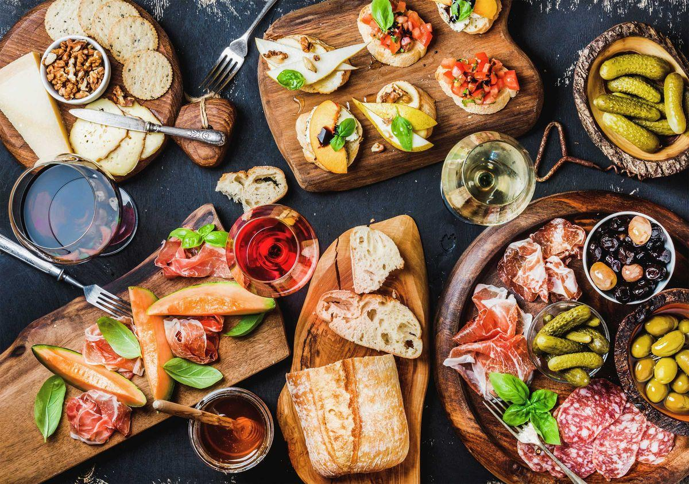

Гастрономическое путешествие по
Италии
 Итальянская кухня — это, прежде всего, самые лучшие продукты, ведь только такие используют выдающиеся шеф-повара в местных ресторанах. Хорошо готовят и в домах, где хороший продукт — это основа лучшего блюда. Именно им обязан уникальный вкус блюда, который нельзя никак подделать. Свежие овощи, обилие углеводов и отличное содержание животных жиров, вот что делает эту кухню не только одной из самых лучших, но и самых здоровых в мире. Ароматические травы и специи подчёркивают вкус простых ингредиентов, которые добывают из них. Никто как итальянец не может объединить вкусы и ароматы, делая из них настоящий пир для гурманов.
Еда по-итальянски
Традиционный итальянский обед состоит из нескольких блюд, которые превосходно дополняют одно другое и составляют, неразлучную композицию. Итальянцы подходят к своей кухне с большим уважением и заботой относятся к исконным традициям, чтобы передать своим потомкам то, что делает их страну образцом для подражания. Типичный итальянский ужин включает в себя:
Антипасто
Небольшая закуска, которая подаётся непосредственно перед основным блюдом. Не для удовлетворения нашего голода, а для дегустации лучших продуктов. Чаще всего это пласты, которые создают высококачественные колбасы в сопровождении свежих овощей.
{kind=link}
Примавера
Как следует из названия, это первое блюдо, богатое большим количеством углеводов. Чаще всего встречается в виде лапши с вкусным соусом, ризотто или супа.
{kind=link}
Антипасто
Небольшая закуска, которая подаётся непосредственно перед основным блюдом. Не для удовлетворения нашего голода, а для дегустации лучших продуктов. Чаще всего это пласты, которые создают высококачественные колбасы в сопровождении свежих овощей.
Дольче
Это для любителей сладостей, то есть десерт. Но выглядит он, однако, не так, как в России, поэтому для многих может стать большим сюрпризом. Доска сыров с фруктами — это самая распространённая форма Дольче, с которой мы встретимся в итальянском ресторане. Однако, если вы настоящие гурманы, итальянский шеф-повар удовлетворит ваш вкус эксклюзивом. Отличное мороженое, панна котта или тирамису станет настоящей кульминацией итальянской еды.
{kind=link}
{kind=link}
{kind=link}